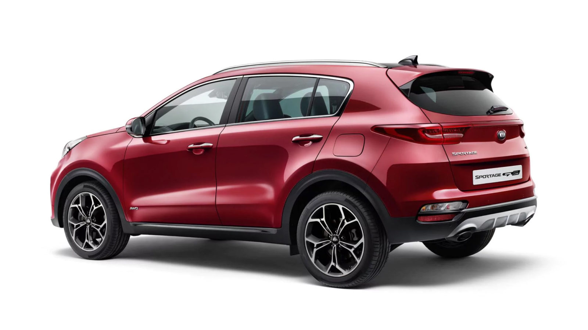
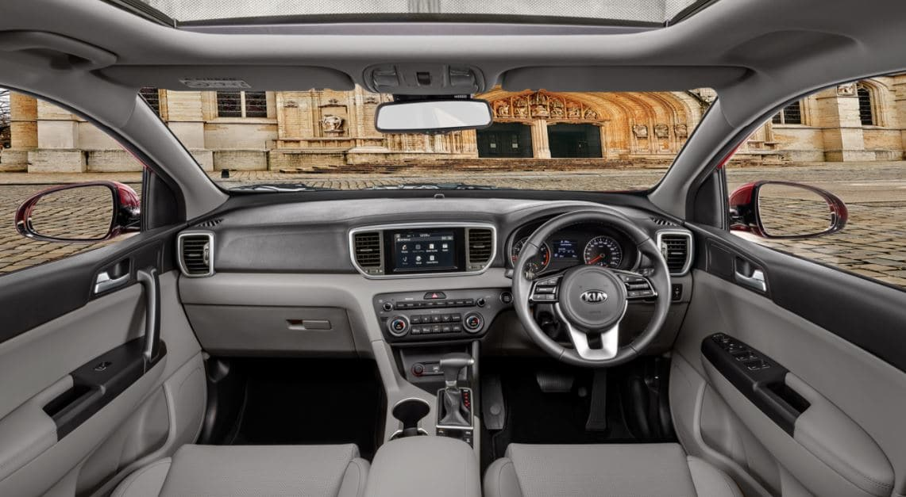

By Waleed Shah | Published May 19, 2023 | 7:14 pm

Sazgar Engineering Works Limited (SEWL) has finally launched the locally assembled Haval Jolion in Pakistan. The company initially debuted it in 2021 as a completely built-up (CBU) import. But the SUV bookings were put on hold later that year as the company geared up to start local assembly of its SUVs.
Since its debut, Haval Jolion has been regarded as one of the best-looking SUVs in Pakistan. Its boxy design and snazzy styling aim to grab the attention and desire of compact SUV buyers across the country.
At its price point, Haval Jolion has two fierce direct competitors, namely, Hyundai Tucson GLS Sport and Kia Sportage FWD. So does the Jolion have what it takes to subdue its rivals? Let us find out
Common consensus suggests that Haval Jolion is among the crossover SUVs in Pakistan with the most striking looks.
The front fascia has a large chrome mesh grille, modern-looking headlamps LED headlights, turn signals, and sharp-looking DRLs attached to the bumper sides to make a boomerang pattern.
The side is mostly simple, although, the body-colored door handles, a single sharp character-line, give it a smooth look, while chromed side-impact strips, a chromed trim-piece surrounding the A, B, and C pillars, and modern alloy wheels give it a premium look.
The rear seems similar to most SUVs, except for the taillight design and the placement of a few chrome and black panels. Overall, Jolion is a unique-looking crossover SUV that turns heads.
Over the years, Pakistanis have grown accustomed to Sportage’s quirky looks.
The front has the sharp LED headlights with quad-DRLs like modern Porsches. Kia’s signature tiger-nose grille, and a radical front bumper design make for an aggressive front end.
On the side, the SUV has 18″ polished alloy wheels, roof-rails, body-colored door handles, and a minimalistic design that give the Sportage a clear look
The rear end also has a quirky design with a rounded tailgate, elongated LED taillight joined by a red strip, reverse lights and turn signals mounted in the very bottom, and a glossy scuff plate down below. Overall, Kia Sportage is an interesting-looking SUV.
Tucson, while subtle and handsome, is not aging well. It has a large hexagonal grille with slats, angular headlights, a smooth hood, and a noisy-bumper design.
With silver roof rails, body-colored door handles, and a set of sharp alloy wheels, the side profile appears clean and simple
The Jolion boasts a modern but clean interior design. The two-step dash layout and the materials all feel high-end giving the SUV a premium look.

The steering has a futuristic 3-spoke design, while the all-digital head unit display (HUD) is more modern than its competitors. In terms of cabin space, the Jolion has plenty, enough to seat five passengers. Overall, Haval Jolion offers decent practicality and comfort
Sportage’s grey and beige interior looks at least two generations old, compared to its competitors. The design is straightforward and effective, but there are other SUVs in the market with more modern interiors.
It has leatherette seats, a spacious and comfortable cabin that can easily accommodate 5 people. The interior is enhanced by reclining rear seats and a panoramic sunroof.
All of these factors combine to create a slightly dated but adequate family SUV.
In terms of design, Hyundai Tucson has almost the same issues as the Sportage. The cockpit is slightly more modern than the Sportage, with a more angular and complex dash design.

In terms of design, Hyundai Tucson has almost the same issues as the Sportage.
The cockpit is slightly more modern than the Sportage, with a more angular and complex dash design.
The dimensions of all three SUVs are as follows:
| Measurements | Haval Jolion | Kia Sportage FWD | Hyundai Tucson GLS Sport |
|---|---|---|---|
| Overall Length | 4,472 mm | 4,485 mm | 4,480 mm |
| width | 1,841 mm | 1,855 mm | 1,850 mm |
| Overall Height | 1,619 mm | 1,635 mm | 1,660 mm |
| Wheelbase | 2,700 mm | 2,670 mm | 2,670 mm |
| Ground Clearance | 190 mm | 172 mm | 172 mm |
Jolion has only one engine option — a 1.5-liter turbocharged 4-cylinder engine that puts out 145 hp and 220 Nm of torque. The power is sent only to the front wheels via a 7-speed dual-clutch automatic gearbox.
The SUV has McPherson struts up front and a torsion bar coil-spring suspension at the back. It has disc brakes on all four wheels with ABS, EBD, and BA technology to allow for good stopping power.
According to information on various forums, users claim a fuel economy of around 12 km per liter. However, given Jolion’s size and weight the actual fuel economy should be lower.
Both, Kia Sportage FWD and Hyundai Tucson GLS Sport have the same powertrains and other mechanical components — a 2.0-liter naturally-aspirated 4-cylinder petrol engine that sends 155 hp of power and 196 Nm of torque to all four wheels via a 6-speed torque-converter automatic gearbox.
Both SUVs consist of McPherson struts up front and a multi-link coil spring suspension in the back.
They also have disc brakes on all four wheels with ABS, EBD, and BA technology.
As reported by owners on various forums, both Tucson and Sportage have a fuel economy of 10-12 kilometers per liter.
The features of all three SUVs are as follows:
| Specs and Features | Sportage FWD | Tucson GLS Sport | Haval Jolion |
|---|---|---|---|
| Central Power Doorlocks | Yes | Yes | Yes |
| Contact Sensing Doorlocks and Windows | Yes | yes | Yes |
| Immobilizer System & Burglar Alarm | Yes | Yes | Yes |
| Parking Sensors | td>YesYes | Yes | |
| Camera | Rear Only | Rear Only | Surround View |
| Lane Departure Warning | No | No | Yes |
| Forward Collision Warning | No | No | yes |
| Cruise Control | Normal | Normal | Adaptive |
| Airbags | 2 | 2 | 6 |
| Ambient Lighting | No | No | No |
The prices of both SUVs are as follows:
| Model | Price |
|---|---|
| Haval Jolion | 8,299,000 |
| Hyundai Tucson GLS Sport | 8,230,000 |
| Kia Sportage FWD | 7,940,000 |
In terms of features, Kia Sportage FWD and Hyundai Tucson GLS Sport fall well short of Haval Jolion. Although, price wise, both SUVs are at a slight advantage.
The only thing in Sportage and Tucson’s favor against the Jolion is their brand value, which may not be enough for SUV buyers who prefer advanced features and strong performance.
Therefore, despite its low popularity, the Jolion is a credible threat to the Koreans.
If you want to join us in our mission to share independent, global journalism to the world, we’d love to have you on our side. If you can, please support us on a monthly basis. It takes less than a minute to set up, and you can rest assured that you’re making a big impact every single month in support of open, independent journalism. Thank you.